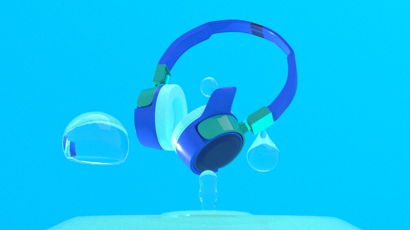
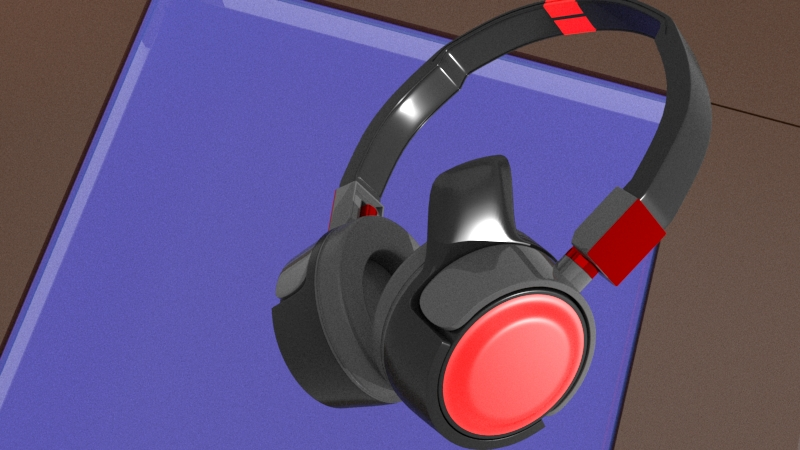

Audifonos
Renderizado de alta calidad de unos audífonos innovadores. Este proyecto representa la fusión perfecta entre diseño estético y funcionalidad excepcional. Cada detalle de los audífonos ha sido cuidadosamente modelado y renderizado para capturar su estilo distintivo y su tecnología avanzada.